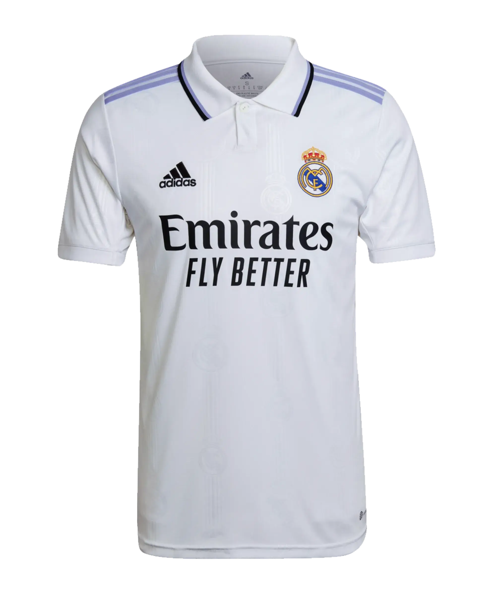
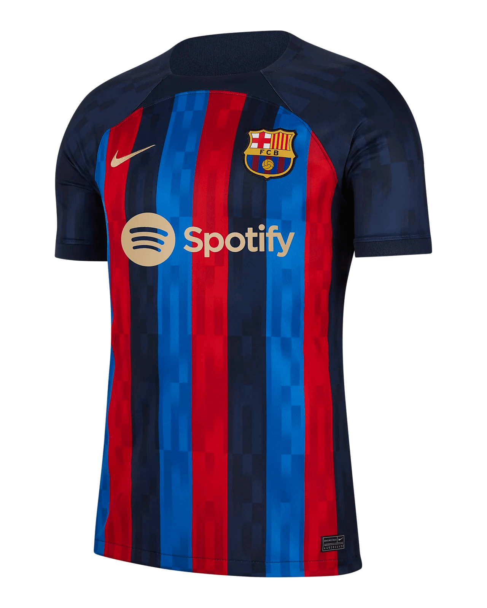
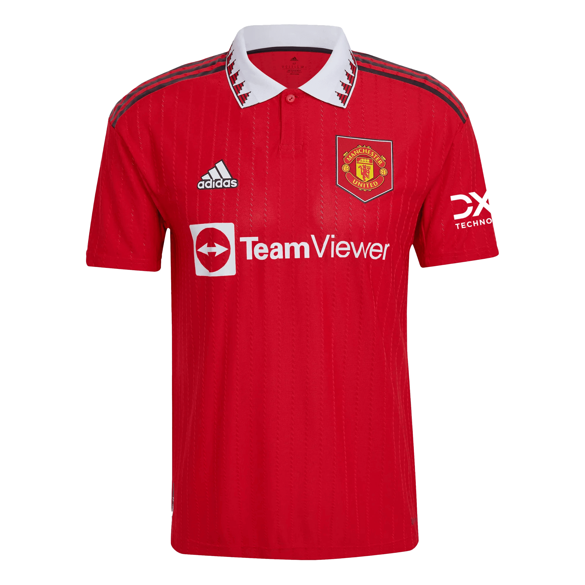
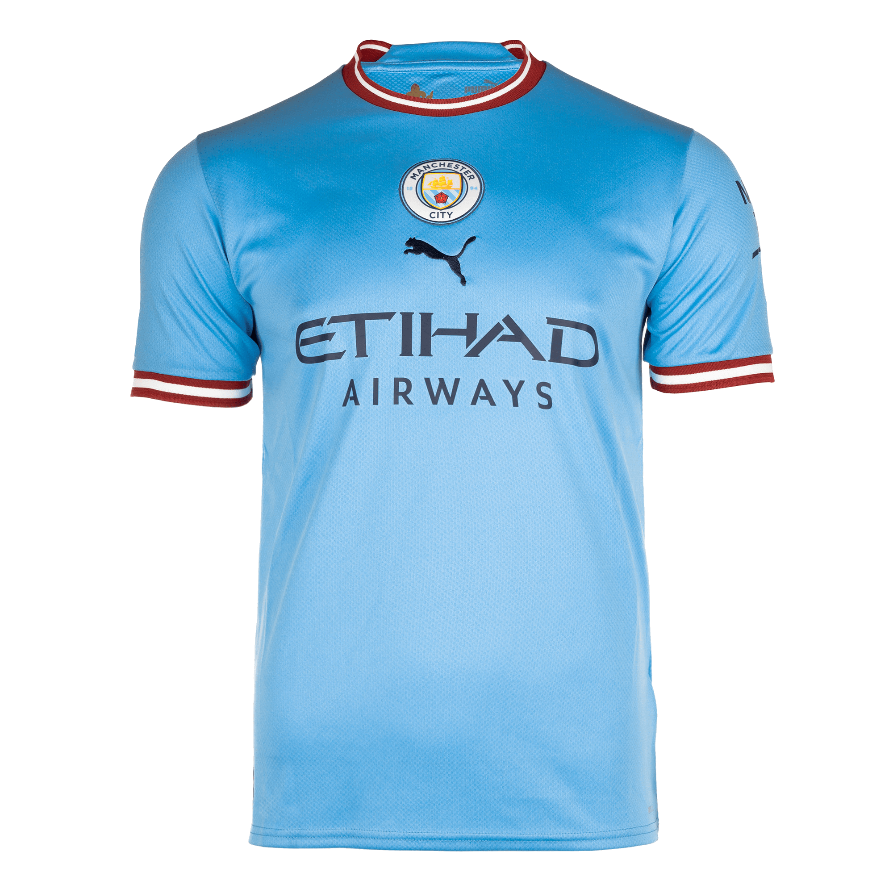
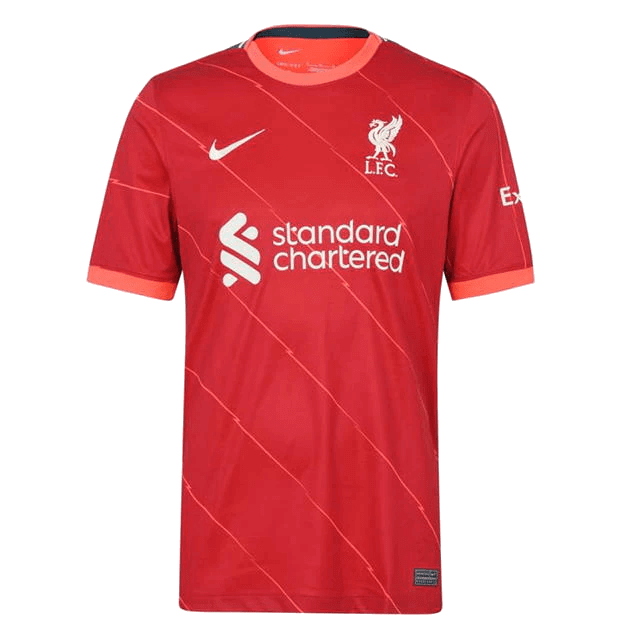

Real Madryt

Domowa koszulka Królewskich na sezon 2022/23 prezentuje się w tradycyjnych dla klubu barwach. Po ponad dekadzie na koszulkach domowych, pojawił się kultowy biały kolor klubu z czernią i fioletem.
Charakterystycznym elementem jest to, że biel koszulki uzupełniona została fioletowymi wstawkami na ramionach. Aby dopełnić klasyczny wygląd, klasyczny kołnierzyk polo ma wykończenia w kolorze fioletowym i czarnym. Fioletowy strój Real Madryt po raz ostatni miał na wyjazdowych meczach w sezonie 2016/17, podczas gdy ten kolor był regularnie używany w ich koszulkach domowych w latach 80. i 90. XX wieku.
W tylnej części kołnierzyka, od wewnętrznej strony, producent umieścił napis 120 años. Tym akcentem, adidas przypomina wszystkim kibicom o 120 letniej historii klubu z Madrytu.
Nie można nie wspomnieć również o wyszywanym herbie klubu na lewej piersi. Logo adidas jest haftowane w kolorze czarnym, a logo sponsora FLY BETTER na piersi zostało nadrukowane na koszulkę.
Adidas zmienił również technologię wykonywania koszulki. Przez lata używana była technologia Aeroready. W tym sezonie, dzięki wdrożeniu technologii HEAT.RDY, będzie można poczuć jeszcze wyższą jakość noszenia.
Naszywka z kodem seryjnym u dołu oraz oryginalne metki są dowodem autentyczności – koszulki sprowadzamy tylko z oficjalnego źródła.
Niezmiennie część piłkarskiej mody. Ta koszulka wyjazdowa adidas Real Madrid prezentuje świeże odcienie i przyciągającą wzrok grafikę inspirowaną paskiem otaczającym klubową naszywkę. Model stworzony z myślą o komforcie kibiców ma odprowadzający wilgoć AEROREADY i panele z siateczki. Wyszywana, monochromatyczna wersja tej sławnej naszywki podkreśla Twoją dumę.
Ten produkt został wykonany w 100% z materiałów pochodzących z recyklingu i stanowi tylko jedno z naszych rozwiązań, które pomogą wyeliminować zanieczyszczenie plastikiem.
FC Barcelona

Domowy trykot Dumy Katalonii na sezon 2022/23 będzie oparty na nowym modelu Nike 2022. Godne uwagi cechy nowego modelu koszulki to nowy wzór Vaporknit i umiejscowienie logo Dri-Fit ADV, które znajduje się teraz na plecach. Projekt trykotu był inspirowany Igrzyskami Olimpijskimi, które odbyły się w Barcelonie w 1992 roku, a także transformacją, jakiej doświadczyło miasto. Tę inspirację widać znacznie wyraźniej w stroju wyjazdowym, który ozdobiony jest wzorem wstążek medalowych olimpijskich sprzed 30 lat.
Producent wprowadza stylowy wygląd, dodając ciemnoniebieski do tradycyjnych pasków Blaugrany. Rękawy i kołnierz koszulki Barçy są w jednolitym kolorze granatowym, a przód ma dość szerokie pasy w kolorze granatowym, królewskim i czerwonym. Oficjalna nazwa granatu użytego w zestawie to „obsydian”, który jest również kolorem logo na złotym zestawie wyjazdowym. Wewnątrz niebiesko-czerwonych pasków na przodzie domowej koszulki znajduje się subtelny nadruk, który pojawi się również na różnej innej odzieży z kolekcji, w tym na koszulce przedmeczowej.
W ostatnich latach, na piersi widniało logo Rakuten. Umowa w sezonie 21/22 wygasła, a Blaugrana znalazła nowego popularnego sponsora – Spotify. Logo znanej marki muzycznej, będzie widnieć z przodu koszulki, w złotym kolorze, takim samym co logo Nike.
Naszywka z kodem seryjnym u dołu oraz oryginalne metki są dowodem autentyczności – koszulki sprowadzamy tylko z oficjalnego źródła.
Manchester United

Domowy trykot drużyny z Old Trafford na sezon 2022/23 łączy w sobie ciemnoczerwony kolor, z białym logo Adidas i trzema czarnymi paskami adidas na ramionach. To co wyróżnia ten projekt to kołnierz polo. Biały kołnierzyk ma trójkątny wzór inspirowany 1994 rokiem.
Zestaw domowy Czerwonych Diabłów zawiera tarczę z logo Manchesteru United. Tarcza ma kształt pięciokąta z nieco ciemniejszym odcieniem czerwieni niż reszta koszulki. Jest również obrysowany cienką obwódką, aby oddzielić kształt. Ostatni raz herb Manchesteru United miał wokół siebie tarczę w 2019 roku, ale tym razem kształt i kolor są inne. Nike zrobiło to w latach 2006-07. Graficzny „trójkątny” wzór zaprojektowany został na samej koszulce, na kołnierzu.
Zmianie nie uległo logo sponsora generalnego Czerwonych Diabłów – na przodzie koszulki umieszczone zostało logo Team Viewer. Zmiana nastąpiła na rękawku, tam widnieje logo DXC Technology zamiast logo Kohler.
Naszywka z kodem seryjnym u dołu oraz oryginalne metki są dowodem autentyczności – koszulki sprowadzamy tylko z oficjalnego źródła.
Manchester City

PUMA prezentuje najnowszą koszulkę z drużyny Manchester City FC , nową koszulkę treningową na sezon 22/23. Posiada wygodną konstrukcję dopasowaną do ciała, która pozwala sportowcowi na łatwiejsze poruszanie się.
Ma prążkowany okrągły dekolt i prążkowane rękawy. Jest wykonana z poliestru w połączeniu z technologią DryCell, która łatwo wchłania wilgoć i zapewnia chłód i suchość podczas treningu.
Na środku klatki piersiowej posiada logo producenta oraz insygnia MCFC.
Ich podania i ruch, od początku do końca ofensywny futbol po prostu wyprzedzał swój czas. Tak więc, kiedy zdobyli każdy krajowy tytuł i uzupełnili go Pucharem Zdobywców Pucharów, zrobili to w sposób, który pół wieku później inspiruje nowe pokolenie mieszczan, którzy nadal przesuwają granice w domu iw Europie. W tym sezonie Manchester City FC i PUMA honorują zespół zawadiackich artystów i ich lidera: ikonę klubu Colina Bella. Strój Manchester City FC Home na lata 2022/23 nawiązuje do klasycznych projektów swojej epoki, umieszczając herb klubu na środku i bordowe wykończenia na mankietach rękawów. Logo z koroną wewnątrz dekoltu to hołd dla „Króla Colina”.
Liverpool

Domowy trykot Liverpoolu na sezon 2022/23 ma bardzo prosty i stonowany wzór w kolorze czerwonym, bez żadnych grafik i wykończeń, z samymi logo w kolorze białym.
Główny kolor koszulki jest nieco ciemniejszy niż w poprzednim sezonie, co dobrze współgra z ogólną estetyką. Zgodnie z tradycją, na tylnej części kołnierza znajdziemy emblemat upamiętniający 97 rocznicę ofiar tragedii na Hillsborough. Subtelny detal można zobaczyć na mankietach rękawów - mają one wzór graficzny YNWA.
Na froncie koszulki widnieje logo Standard Chartered, a na lewym rękawku pojawił się sponsor – Expedia. Czyli tak samo jak w przypadku koszulki na sezon 2021/22.
Naszywka z kodem seryjnym u dołu oraz oryginalne metki są dowodem autentyczności – koszulki sprowadzamy tylko z oficjalnego źródła.
 żna
żna